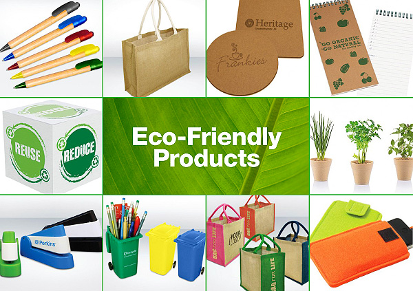

Eco-Friendly Lifestyle
In a world facing increasing environmental challenges, adopting an environmentally friendly lifestyle is more crucial than ever.
By making conscious choices in our daily lives, we can significantly reduce our ecological footprint and contribute to the health
and well-being of our planet. This guide is designed to provide practical tips and actionable steps for individuals looking to
embrace a more sustainable and environmentally friendly way of living.
Ways to live :
Educate
Start by educating yourself about environmental issues, such as climate change, pollution, deforestation, and biodiversity loss.
Understanding the challenges facing our planet will empower you to make informed decisions and take meaningful action.Environmental Education helps us understand how our decisions and actions affect the environment, builds knowledge and skills necessary to address complex environmental issues, as well as ways we can take action to keep our environment healthy and sustainable for the future.
RRR
Reduce, Reuse, Recycle
Use less stuff, find creative ways to reuse what you have, and recycle what you can't use any more. It's like giving things a
second chance!
Reduce, Reuse, Recycle – these three 'R' words are an important part of sustainable living, as they help to cut down on the amount of waste we have to throw away.
It's Really simple!
Reduce the amount of waste you produce.
Reuse items as much as you can before replacing them.
Recycle items wherever possible.

Energy
Turn off lights when you're not using them, unplug devices when they're not in use, and use energy-efficient appliances. It's like
giving the planet a break!
Transportation
Walk, bike, or take public transportation whenever you can. If you need to drive, carpool with friends or consider an electric or
hybrid vehicle. It's like reducing your carbon footprint one ride at a time!
Enjoy-Nature
Spend time outdoors, go for walks, and appreciate the beauty of nature.So more you connect with it, the more you'll want to
protect it. Look deep into nature, and then you will understand everything better. Heaven is under our feet as well as over our heads.
Shopping
Shop Smart.Look for products that are made sustainably and ethically. Quality over quantity is key It's like voting with your wallet for a
better world. Eco-friendly products do not harm the environment or the ecology during their production, use, or disposal. It is often made of natural products, but care is taken not to harm nature, even if the raw materials are natural.
.Using eco-friendly products is the need of the hour. When there is widespread destruction of natural resources taking place worldwide, the earth is being exploited and overtaxed; it is the use of eco-friendly products that can take some burden off the shoulders of nature.

Eat green
Plant-based foods such as fruits and vegetables, whole grains, beans, peas, nuts, and lentils generally use less energy, land, and water, and have lower greenhouse gas intensities than animal-based foods.So try eating more fruits, veggies, and plant-based meals. they're not only good for you but also for the planet. Eating local and
organic foods is like supporting your community and the environment at the same time!
Conclusion:
Living an eco-friendly lifestyle is easier than you think. By following these simple steps, you can make a big difference
for the planet and future generations. Let's go green together and create a healthier, happier world for everyone.